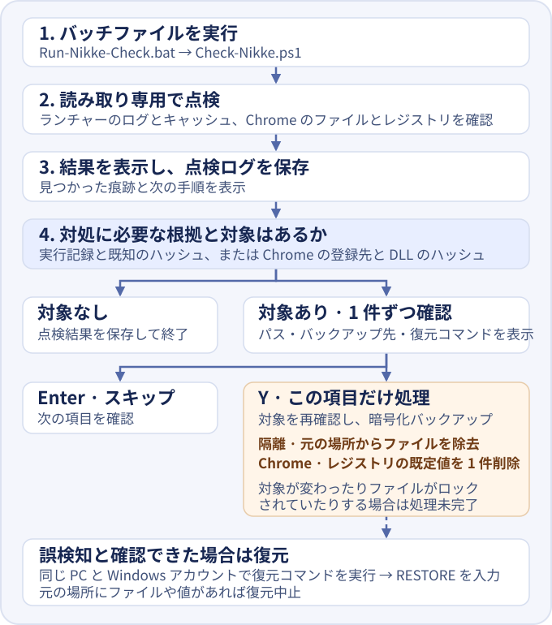

NIKKE ランチャー
感染チェック
Windows に残った記録から、不正なスクリプトに触れた痕跡と、ダウンロードや実行の痕跡を見分けます。


使い方
- ZIP を展開し、
Run-Nikke-Check.batとCheck-Nikke.ps1を同じフォルダーに置きます。 - NIKKE を使っていた Windows アカウントで、バッチファイルをダブルクリックします。インストール先が分かる場合は、そのフォルダーをバッチファイルにドラッグして実行できます。
- 画面に表示される結果と次の手順を確認します。詳しい記録は
logsフォルダーにあります。
画面とログの言語は Windows の表示言語に合わせます。日本語、英語、韓国語に対応し、それ以外は英語で表示します。日本語を指定するには、エクスプローラーでツールのフォルダーを開き、アドレスバーに powershell と入力してから次のコマンドを実行してください。
.\Run-Nikke-Check.bat -Language ja最初の点検では記録を読み取り、ログを保存します。感染を裏付ける痕跡が見つかった場合は、ファイルの隔離や Chrome の自動起動設定の解除を選べます。画面に表示された対象のパス、バックアップ先、復元コマンドを確認してください。処理する項目だけ Y と入力し、スキップする場合は Enter キーを押してください。
誤検知だと確認できた場合は、同じ PC に同じ Windows アカウントでサインインしてください。ツールのフォルダーを開き、アドレスバーに powershell と入力します。先ほど表示された復元コマンドを貼り付け、パスが正しければ RESTORE と入力してください。元の場所にファイルやレジストリ値がある場合は復元を中止します。
結果に応じた対処
- 実行または Chrome での自動起動の痕跡
- インターネットを切断し、ランチャーを閉じてください。安全な別の端末でパスワードを変更し、全端末からログアウトしてください。個人の PC では、ウイルス対策ソフトの検出履歴を保存してから隔離済みの脅威を削除し、Windows のクリーンインストールを検討してください。
- ダウンロードの痕跡
- インターネットを切断し、ランチャーを閉じてください。点検ログを保存し、ウイルス対策ソフトでスキャンしてください。ランチャーをアンインストールしてから再点検します。マルウェアが実行された可能性がある場合は、別の端末からアカウントを保護してください。
- スクリプトに触れた痕跡またはダウンロード先のアドレス
- ランチャーを閉じ、点検ログを保存してください。個人の PC では、Windows の設定から NIKKE をアンインストールしてください。結果に表示されたキャッシュフォルダーが残っていれば、そのフォルダーを削除します。修正版の告知を確認してから、公式配布元から再インストールしてください。
- 判定保留
- NIKKE を使っていた Windows アカウントでインストール先を指定し、もう一度点検してください。
- 既知の痕跡なし
- 読み取れた記録からは既知の痕跡は見つかりませんでした。削除済みの記録や読み取れなかった記録は点検範囲外です。
会社の PC では、対処の前にセキュリティ担当者へ連絡してください。個人の PC で隔離済みのファイルを削除する前に、点検ログのパスとウイルス対策ソフトの検出履歴を照合してください。 Windows でアプリをアンインストール · Windows セキュリティの保護の履歴